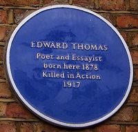

|
En guise de présentation En 1913 l'écrivain, poète, critique littéraire Edward Thomas (1878-1917) effectua un voyage à bicyclette, de Londres jusqu'aux collines de Quantock, dans le Sommerset, site considéré comme parmi les plus beaux d'Angleterre et où vécut le poète romantique anglais Samuel Taylor Coleridge de 1797 à 1798. Il fit le récit de ce voyage dans un livre intitulé : In Pursuit of Spring, publié en 1914. Si ce fut un voyage à bicyclette, ce fut avant tout une sorte de pélerinage littéraire, ainsi que le souligne un article de Saeko Yoshikawa ( Ref : The Abounding Honeysuckle : Edward Thomas, S.T. Coleridge, and The Quantock Hills, par Saeko Yoshikawa, publié dans The Coleridge Bulletin, The Journal of the Friends of Coleridge, New Series 32 (NS) Winter 2008 https://goo.gl/ctnrq5 ) : This journey was a kind of literary pilgrimage, through a West Country landscape deeply enriched by literary associations. To see the landscape of Coleridge's poetry was the main purpose of this pilgrimage Pélerinage littéraire, In Pursuit of Spring est aussi un livre dans la lignée de la littérature rurale anglaise ainsi que le remarque Jacek Wiśniewski, professeur de littérature anglaise et de civilisation britannique, auteur de Edward Thomas ; A Mirror of England (Cambridge Scholars Publishing, 2009), développant (pages 94-95) : A good nature essay or country book like Edward Thomas's In Pursuit of Spring is usually a curious and intriguing combination of several sub-genres : without the benefit of a sustained plot and its dramatic possibilities, a non-fiction book about nature and the countryside must rely much more heavily on the quality of the narrator's voice. Such country books usually offer a digressive travel account, becaude travel, with its spatial and temporal dimensions, orders and arranges the narrative ; they are also accurate tourist guides with topographical detail, often taken from the excellent Ordnance Survey "Inch to the Mile" maps ; In Pursuit of spring presents a complete journal of a tour, and each chapter is preceded by a detailed map ( for instance, Good Friday took the pursuer from Clapham in London to Guilford) ; it is also a knowledgeable nature study ; a lively polemic; a series of entertaining short stories and comic anecdotes ; several stimulating literary essays ; and last but not least, a large number of passages of beautiful prose which show how close Thomas came by this time to declaring himsel in verse. Edward Thomas a pris le départ de ce voyage le vendredi 21 mars 1913, depuis sa maison natale à Londres ( Voir photos ci-dessous ). A cette époque, et depuis l'année 1906, il vivait dans le village de Steep dans le comté de Hampshire ( ref : telegraph.co.uk. Voir la maison de Edward Thomas à Steep sur le site Dr Tony Shaw ). Nous vous propons la traduction française de In Pursuit of Spring, effectuée par nos soins, et publiée sur ce site au fur et à mesure de la traduction des chapitres. Pourquoi The Other Man en titre de ce site ? Vous comprendrez en lisant le livre !  Londres, maison natale de Edward Thomas (1878), avec la plaque bleue à côté de la porte. Londres, maison natale de Edward Thomas (1878), avec la plaque bleue à côté de la porte Londres, maison où vécut Edward Thomas dans les années 1890, avec la plaque bleue à côté de la fenêtre
ce film de Londres en 1917, soit quatre années après le voyage. Source
Aller directement au chapitre 1 |